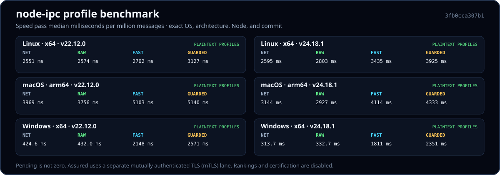

v12 vs current transports
Paired time for one million messages through native local IPC, TCP, TLS, UDP4, and UDP6 on Linux, macOS, and Windows.
Open transport comparison →Performance is a release requirement
Every result starts from a fresh process and endpoint, communicates with the same raw reflector contract, retains its samples, and reports provenance. Missing evidence stays visibly missing.

Paired time for one million messages through native local IPC, TCP, TLS, UDP4, and UDP6 on Linux, macOS, and Windows.
Open transport comparison →Latency per million messages, throughput, and selected-control overhead for Raw, Fast, Guarded, and Assured.
Open profile results →Memory checkpoints, package footprint, garbage collection, process exits, socket reuse, active resources, and temporary leftovers.
Open resource results →The reflector contracts, paired order, clean baselines, instrumentation lanes, byte accounting, and publication gates.
Open methodology →Machine, OS, architecture, Node, commit, oracle, configuration, hashes, raw samples, and manifest state.
Open profile run records →Compatible clients connect to the same byte-reflector source and protocol. Every sample receives a fresh reflector process and endpoint.
Raw, Fast, and Guarded are compared under the same transport and payload semantics. Their wire byte counts are measured, not assumed.
Assured requires mutually authenticated TLS for network use and is measured separately with its certificate, trust-root, and transport configuration recorded. It is not ranked as plaintext.
The existing six-platform/Node records establish the standard-C oracle and publication infrastructure. They do not supply profile latency or a vehicle ranking.